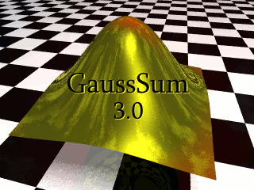

GaussSum Version 3.0
Next
GaussSum Version 3.0
Table of Contents
Introduction
Citation
Acknowledgments
1. Installation
Installing an all-in-one bundle on Windows
Installing the
GaussSum
scripts on Windows
Installing on Linux
2. How do I find all lines with a certain phrase?
3. How do I follow the progress of an SCF convergence?
4. How do I follow the progress of a geometry optimisation?
5. How do I get the IR or Raman spectrum of a molecule?
6. How do I extract molecular orbital information?
How to extract basic information (DOS)
How to find the % contribution of a group to each molecular orbital (PDOS)
How to find the nature of the overlap between different groups of atoms (COOP)
7. How do I get the UV-Vis or circular dichroism spectrum of a molecule?
The UV-visible spectrum
The circular dichroism spectrum
The electron density difference map (EDDM) [Gaussian only]
8. How can I automate spectra generation for multiple files? [Advanced]
Generate UV-Vis spectra for multiple files
